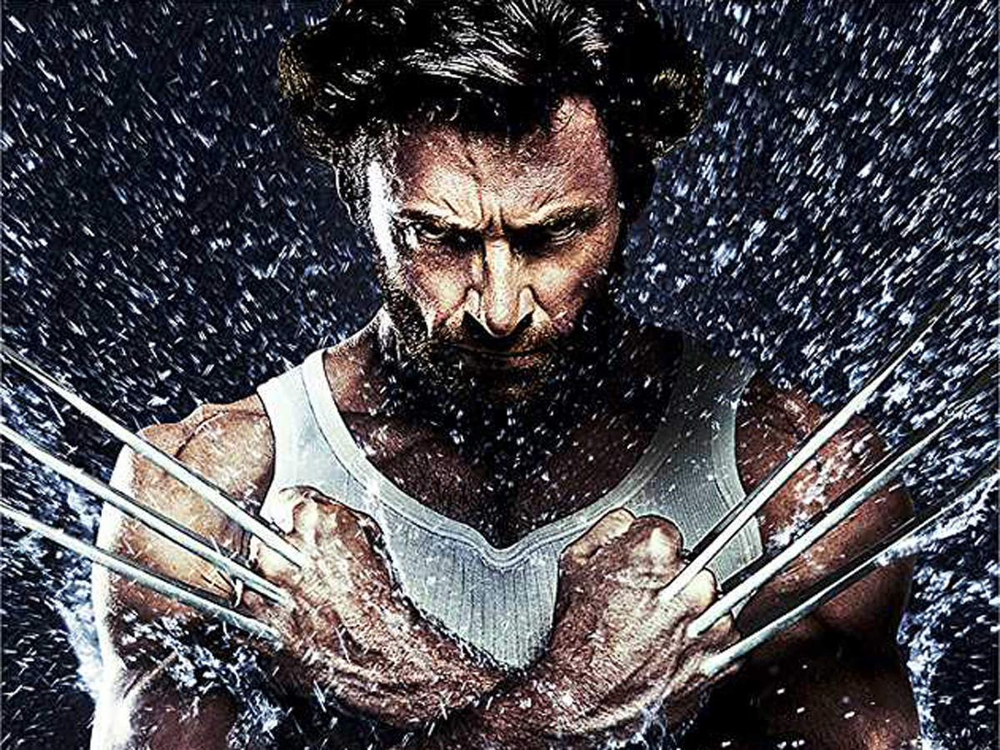
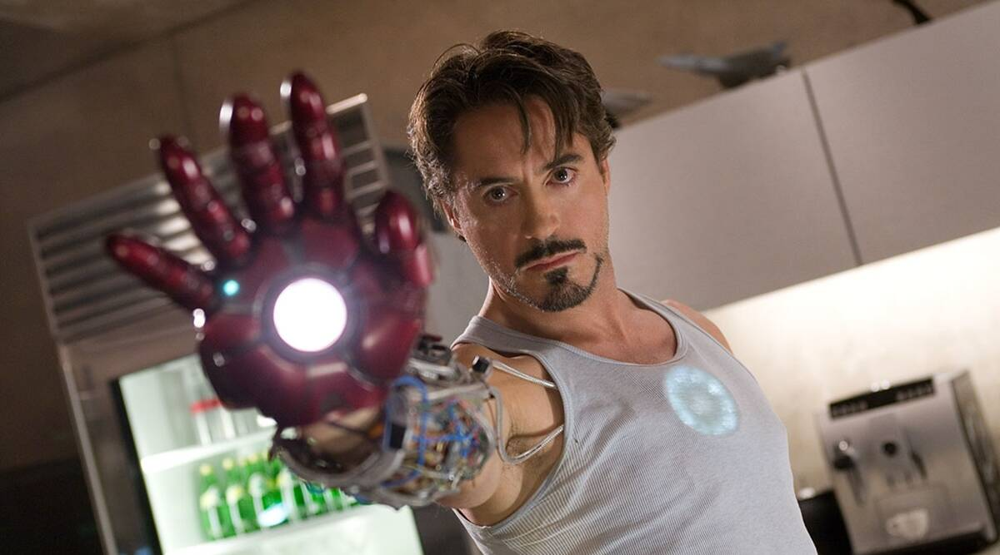

Edward Norton
Edward Norton ca Bruce Banner : Un fizician nuclear și biochimist de la Universitatea Culver care, din cauza expunerii la radiații gamma , se transformă într-un monstru umanoid verde enorm atunci când este înfuriat sau agitat. David Duchovny a fost un favorit pentru film înainte de castingul lui Norton, în timp ce alegerea inițială a lui Louis Leterrier pentru rol a fost Mark Ruffalo , care mai târziu avea să joace Banner în viitoarele filme Marvel Cinematic Universe .
Gale Anne Hurd și-a amintit de portretele lui Norton ale dualității în Primal Fear and Fight Club , în timp ce Norton ia amintit lui Kevin Feige de Bill Bixby , care a jucat rolul lui Banner în serialul TV . Lou Ferrigno, care a jucat Hulk cu Bixby, a remarcat că Norton „are un fizic similar [și o] personalitate similară”. Norton a fost un fan Hulk , citând primele apariții în benzi desenate, serialul Bixby TV și rularea lui Bruce Jones în benzile desenate, drept reprezentările sale preferate ale personajului. Și-a exprimat interesul pentru rolul din primul film.
El a refuzat inițial rolul, amintindu-și că „a existat factorul de tresărire sau partea defensivă a ta care se dă înapoi la versiunea proastă a ceea ce ar fi”, deoarece a simțit că filmul anterior „s-a îndepărtat mult de o poveste care era familiar oamenilor, [...] care este o poveste fugară”. Când i-a întâlnit pe Leterrier și Marvel, i-a plăcut viziunea lor și a crezut că se uita la el pentru a ghida proiectul. Astfel, Norton a rescris scenariul. „Scenariul lui Edward a oferit poveștii lui Bruce o seriozitate reală”, a spus Leterrier. „Desigur, nu sunt cel mai adult regizor, dar doar pentru că facem un film cu supereroi, nu trebuie să atragă doar băieții de 13 ani. Ed și cu mine vedem amândoi supereroii ca pe noii zei greci .
Tom Holland
Tom Holland în rolul lui Peter Parker / Omul-Păianjen: Un adolescent și Răzbunător care a primit abilități de arahnidă după ce a fost mușcat de un păianjen radioactiv.
Filmul explorează evenimentele de după scena finală din Omul-Păianjen: Departe de casă (2019), în care identitatea secretă a lui Parker a fost dezvăluită, iar Parker devine mai pesimist, în contrast cu filmele MCU anterioare. Holland a spus despre Parker că se simte înfrânt și nesigur și a fost nerăbdător să exploreze latura întunecată a personajului. Revenirea la personajul Parker, inclusiv ridicarea tonalității vocii și întoarcerea la "adolescentul naiv și fermecător", a fost ciudată pentru Holland după ce a abordat roluri mai mature, precum cel din Cherry (2021).
Mark Ruffalo
Mark Ruffalo este actorul care îi interpretează pe Bruce Banner și Hulk în filmul cu super-eroi din 2012 The Avengers, a șasea ediție a Universului cinematografic Marvel. El l-a înlocuit pe Edward Norton în rol. El a fost considerat să joace Banner în The Incredible Hulk înainte ca Norton să preia rolul. The Avengers a fost prima producție în care actorul care îl interpretează pe Banner îl joacă și pe Hulk prin utilizarea CGI de captare a mișcării. El a oferit, de asemenea, vocea cuvintelor lui Hulk. Ruffalo a fost un fan al emisiunii TV.
Ruffalo a primit aprecieri de critică pentru interpretarea sa și va relua rolul în adaptările cinematografice ulterioare ale personajului produs de Marvel Studios. Pe 4 februarie 2013, a fost dezvăluit că un al treilea film Hulk, bazat pe arcul povestirii Planet Hulk, care a trecut prin numerele 92-105 din benzile desenate The Incredible Hulk, va intra în dezvoltare.
Hugh Jackman
Jackman juca supereroi înainte ca aceștia să fie cool. Primul film X-Men , în care Jackman a debutat în rolul emblematicului mutant cu gheare Wolverine în 2000, a pus bazele dominației Universului cinematografic Marvel un deceniu mai târziu. Jackman l-a jucat pe Wolverine, alias Logan, în nouă filme de-a lungul a 16 ani. Și până la sfârșit, regimul de antrenament trebuia să rămână în formă, deoarece îndrăgitul super-erou Marvel devenise destul de intens.
La începutul anilor 2010, Jackman s-a trezit filmând filmul său solo cu supereroi The Wolverine și X-Men: Days of Future Past aproape spate la spate. El a spus la acea vreme pentru EW că, pe măsură ce a început să împacheteze The Wolverine , „începea să vadă o viață fără piept de pui aburit”, dar nu a rezistat să se alăture filmului de echipă care l-a reunit cu co-staruri originale X-Men precum Halle Berry împreună cu noua generație de actori din X-Men: First Class .
Iron Man
În 2007, Downey a fost ales ca personajul principal în filmul Iron Man , regizorul Jon Favreau explicând alegerea declarând: „Downey nu a fost cea mai evidentă alegere, dar a înțeles ce face personajul să bifeze. A găsit multe din propria sa experiență de viață în „Tony Stark”. Favreau a insistat să-l aibă pe Downey, deoarece a susținut în mod repetat că Downey ar fi pentru Iron Man ceea ce Johnny Depp este pentru serialul Pirații din Caraibe : un actor principal care ar putea atât să ridice calitatea filmului, cât și să crească interesul publicului pentru el.Pentru rol, Downey a trebuit să câștige peste 20 de lire sterline (9 kilograme) de mușchi în cinci luni pentru a părea că „are puterea de a forja fierul”.
Iron Man a fost lansat la nivel global între 30 aprilie și 3 mai 2008, încasând peste 585 de milioane de dolari în întreaga lume și primind recenzii elogioase care au citat performanța lui Downey ca punct culminant al filmului
Captain America

În 2013, Chris a observat că Marvel se întorcea la Cleveland pentru a filma scene pentru Căpitanul America. După ce a ascultat știrile locale, a aflat că sunt disponibile roluri vorbitoare și a intrat imediat pe internet pentru a vedea ce căutau să distribuie. „Unul etichetat „Thin Guy” se potrivește exact descrierii mele. Vârsta, înălțimea, greutatea; Mă potrivesc pe toate. Așa că, când a venit timpul pentru casting, am știut că trebuie să plec.”
Când Chris a sosit, a observat că erau cel puțin 200 de oameni care semănau exact cu el. Directorul de casting a continuat să meargă în sus și în jos printre rândurile de speranțe spunându-le oamenilor să plece acasă. „Unele erau prea înalte, prea grele, prea largi. Când a terminat, mai erau doar vreo 40 dintre noi.”
După 5 săptămâni, a primit un telefon în care i-a cerut dacă poate merge să facă o audiție pentru rol. „Au instalat o cameră, mi-au dat câteva pagini de dialog și au înregistrat mai multe fotografii.” Doar 2 ore mai târziu a primit apelul pe care îl spera.
„Am fost extaziat. Le-am spus imediat părinților și fraților mei. Toată lumea știa că am fost la o audiție, dar nu cred că nimeni (inclusiv eu) și-a dat seama că o voi obține cu adevărat. Am fost atât de entuziasmat. Nu știu dacă mă voi simți vreodată atât de entuziasmat în viața mea.”